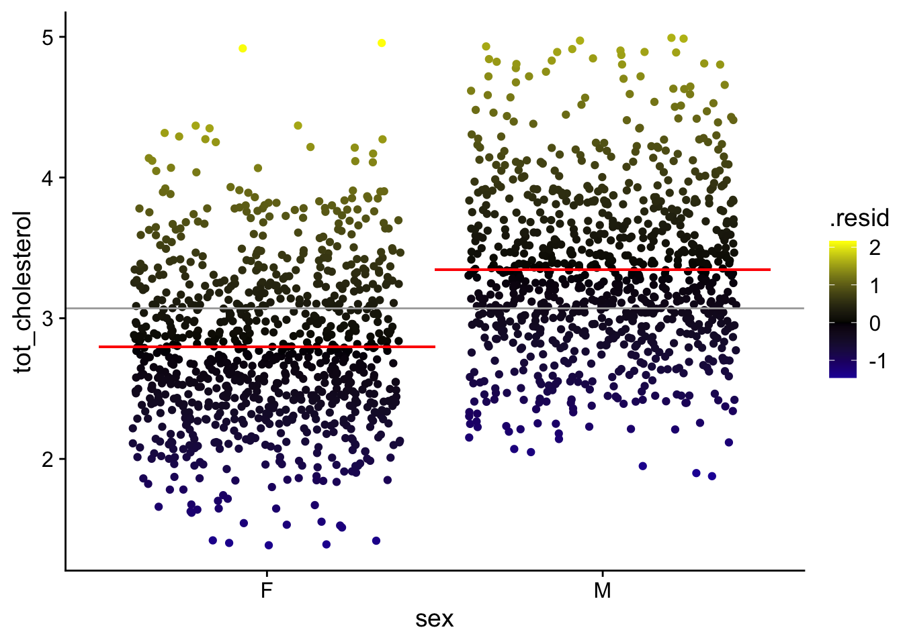
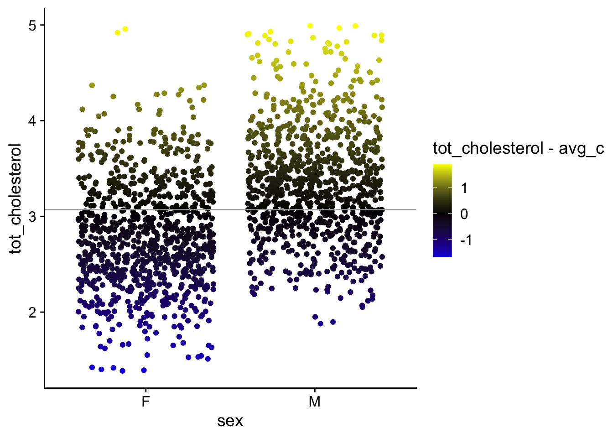

-- Attaching core tidyverse packages ------------------------ tidyverse 2.0.0 --
v dplyr 1.1.3 v readr 2.1.4
v forcats 1.0.0 v stringr 1.5.0
v ggplot2 3.4.3 v tibble 3.2.1
v lubridate 1.9.2 v tidyr 1.3.0
v purrr 1.0.2
-- Conflicts ------------------------------------------ tidyverse_conflicts() --
x dplyr::filter() masks stats::filter()
x dplyr::lag() masks stats::lag()
i Use the conflicted package (<http://conflicted.r-lib.org/>) to force all conflicts to become errors
Attaching package: 'rstatix'
The following object is masked from 'package:stats':
filter
Attaching package: 'janitor'
The following object is masked from 'package:rstatix':
make_clean_names
The following objects are masked from 'package:stats':
chisq.test, fisher.test
here() starts at /Users/jayhesselberth/devel/rnabioco/molb-7950
Attaching package: 'cowplot'
The following object is masked from 'package:ggpubr':
get_legend
The following object is masked from 'package:lubridate':
stampProblem Set Stats Bootcamp - class 12
Hypothesis Testing
biochem <- read_tsv("http://mtweb.cs.ucl.ac.uk/HSMICE/PHENOTYPES/Biochemistry.txt", show_col_types = FALSE) |>
janitor::clean_names()Warning in FUN(X[[i]], ...): unable to translate '<U+00C4>' to native encodingWarning in FUN(X[[i]], ...): unable to translate '<U+00D6>' to native encodingWarning in FUN(X[[i]], ...): unable to translate '<U+00DC>' to native encodingWarning in FUN(X[[i]], ...): unable to translate '<U+00E4>' to native encodingWarning in FUN(X[[i]], ...): unable to translate '<U+00F6>' to native encodingWarning in FUN(X[[i]], ...): unable to translate '<U+00FC>' to native encodingWarning in FUN(X[[i]], ...): unable to translate '<U+00DF>' to native encodingWarning in FUN(X[[i]], ...): unable to translate '<U+00C6>' to native encodingWarning in FUN(X[[i]], ...): unable to translate '<U+00E6>' to native encodingWarning in FUN(X[[i]], ...): unable to translate '<U+00D8>' to native encodingWarning in FUN(X[[i]], ...): unable to translate '<U+00F8>' to native encodingWarning in FUN(X[[i]], ...): unable to translate '<U+00C5>' to native encodingWarning in FUN(X[[i]], ...): unable to translate '<U+00E5>' to native encoding# simplify names a bit more
colnames(biochem) <- gsub(pattern = "biochem_", replacement = "", colnames(biochem))
# we are going to simplify this a bit and only keep some columns
keep <- colnames(biochem)[c(1, 6, 9, 14, 15, 24:28)]
biochem <- biochem[, keep]
# get weights for each individual mouse
# careful: did not come with column names
weight <- read_tsv("http://mtweb.cs.ucl.ac.uk/HSMICE/PHENOTYPES/weight", col_names = F, show_col_types = FALSE)
# add column names
colnames(weight) <- c("subject_name", "weight")
# add weight to biochem table and get rid of NAs
# rename gender to sex
b <- inner_join(biochem, weight, by = "subject_name") |>
na.omit() |>
rename(sex = gender)Problem # 1
Can mouse sex explain mouse cholesterol? {.smaller}
STEP 1: Null hypothesis and variable specification
\(\mathcal{H}_0:\) mouse \(sex\) does NOT explain \(cholesterol\)
\(cholesterol\) is the response variable
\(sex\) is the explanatory variable
STEP 2: Fit linear model and examine results
fit_cs <- lm(formula = tot_cholesterol ~ 1 + sex, data = b)Fit summary:
glance(fit_cs) |>
gt() |>
fmt_number(columns = r.squared:statistic, decimals = 3)| r.squared | adj.r.squared | sigma | statistic | p.value | df | logLik | AIC | BIC | deviance | df.residual | nobs |
|---|---|---|---|---|---|---|---|---|---|---|---|
| 0.184 | 0.183 | 0.576 | 400.774 | 1.425116e-80 | 1 | -1546.04 | 3098.081 | 3114.537 | 591.5753 | 1780 | 1782 |
Coefficient summary:
tidy(fit_cs) |>
gt() |>
fmt_number(columns = estimate:statistic, decimals = 3)| term | estimate | std.error | statistic | p.value |
|---|---|---|---|---|
| (Intercept) | 2.797 | 0.019 | 144.812 | 0.000000e+00 |
| sexM | 0.547 | 0.027 | 20.019 | 1.425116e-80 |
Collecting residuals and other information
add residuals and other information
# augment
b_cs <- augment(fit_cs, data = b)
avg_c <- mean(b_cs$tot_cholesterol)
c <- b |>
group_by(sex) |>
get_summary_stats(tot_cholesterol, type = "mean")
# mean chol female
avg_cf <- pull(c[1, 4])
# mean chol male
avg_cm <- pull(c[2, 4])STEP 4: Visualize the error around fit
# plot of data with mean and colored by residuals
p_cs <- ggplot(
b_cs,
aes(x = sex, y = tot_cholesterol)
) +
geom_point(
position = position_jitter(),
aes(color = .resid)
) +
scale_color_gradient2(
low = "blue",
mid = "black",
high = "yellow"
) +
geom_hline(
yintercept = avg_c,
color = "darkgrey"
) +
geom_segment(
aes(
x = .5, xend = 1.5,
y = avg_cf, yend = avg_cf
),
color = "red"
) +
geom_segment(
aes(
x = 1.5, xend = 2.5,
y = avg_cm
),
yend = avg_cm,
color = "red"
) +
theme_cowplot()
p_cs
STEP 3: Visualize the error around the null (mean weight)
p_c <- ggplot(
b_cs,
aes(x = sex, y = tot_cholesterol)
) +
geom_point(
position = position_jitter(),
aes(color = tot_cholesterol - avg_c)
) +
scale_color_gradient2(
low = "blue",
mid = "black",
high = "yellow"
) +
geom_hline(
yintercept = avg_c,
color = "darkgrey"
) +
theme_cowplot()
p_c
Plot the fit error and the null error as 2 panels
plot_grid(p_cs, p_c, ncol = 2, labels = c("cholesterol by sex", "cholesterol"))Calculate \(R^2\)
\(R^2 = 1 - \displaystyle \frac {SS_{fit}}{SS_{null}}\)
rsq <- 1 - ss_fit / ss_null
rsq[1] 0.1837759check agains Rsq in your fit
glance(fit_cs) |> select(r.squared)# A tibble: 1 x 1
r.squared
<dbl>
1 0.184Compare to traditional t-test
# run analagous t-test
b |>
t_test(tot_cholesterol ~ 1 + sex) |>
select(-c(n1, n2, df)) |>
gt()| .y. | group1 | group2 | statistic | p |
|---|---|---|---|---|
| tot_cholesterol | F | M | -20.01933 | 1.46e-80 |
tidy(fit_cs) |>
select(term, estimate, statistic, p.value) |>
gt()| term | estimate | statistic | p.value |
|---|---|---|---|
| (Intercept) | 2.7968013 | 144.81230 | 0.000000e+00 |
| sexM | 0.5467901 | 20.01933 | 1.425116e-80 |
Provide your interpreation of the result
The null model that mouse \(sex\) does NOT explain \(cholesterol\) is not well supported. Therefore, i believe that mouse \(sex\) is able to explain ~%18 of the variation in \(cholesterol\).